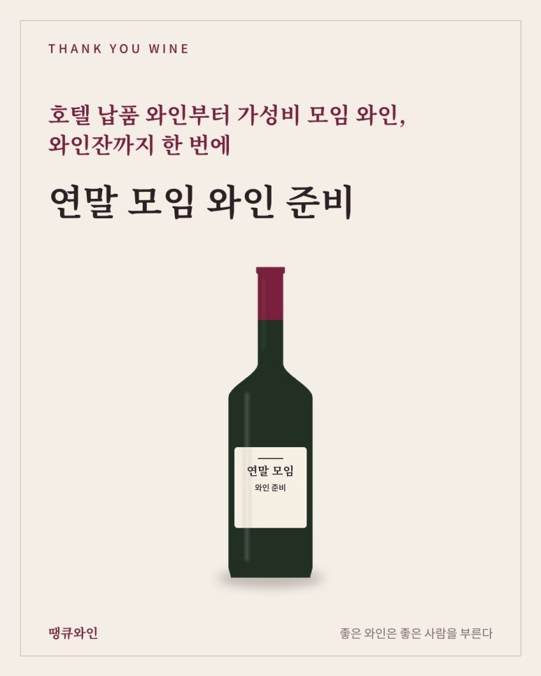
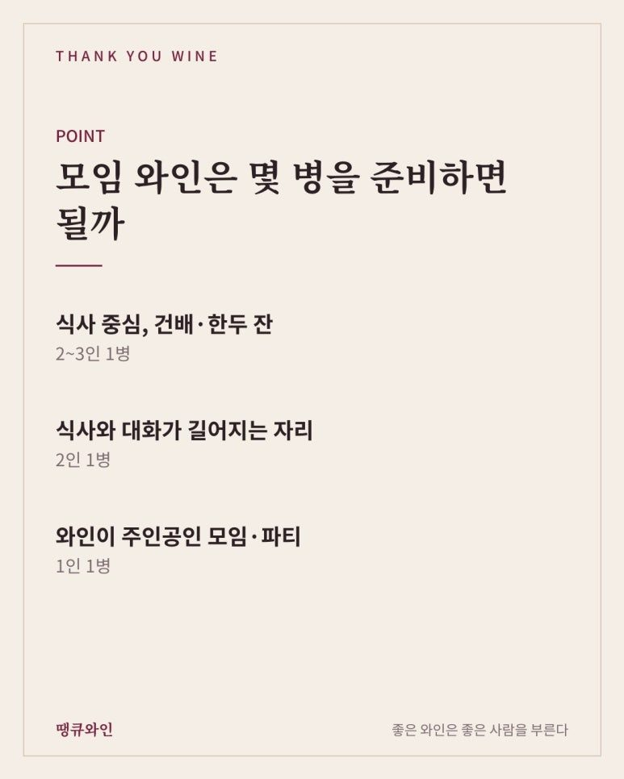
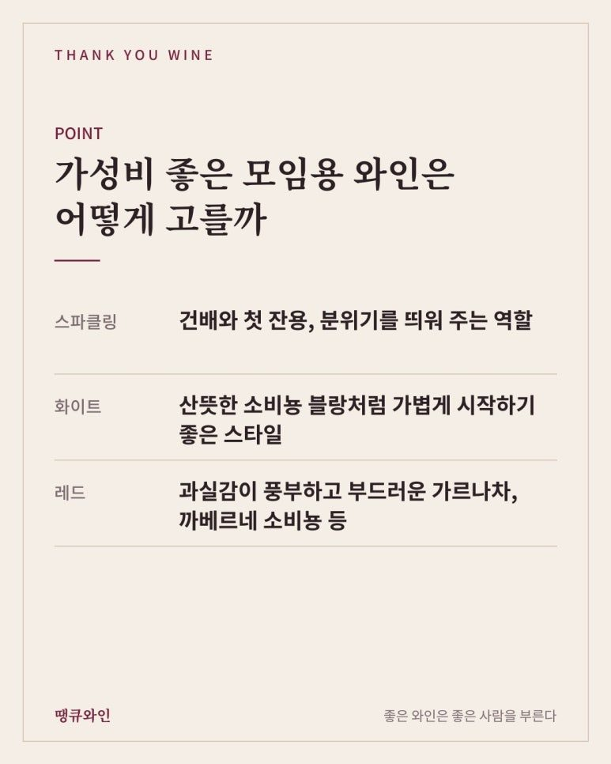
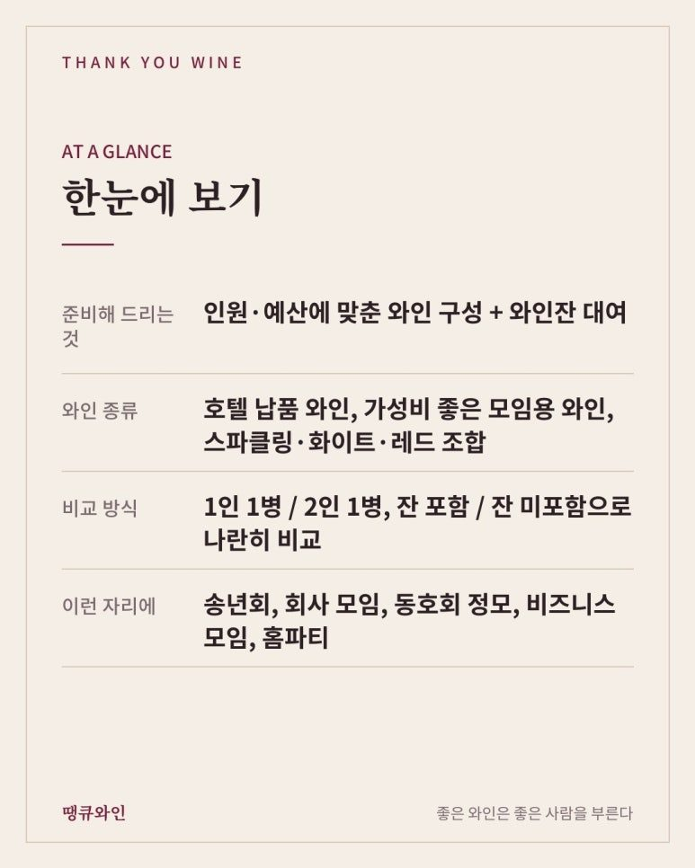

연말 모임 와인 준비
호텔 납품 와인부터 가성비 모임 와인, 와인잔까지 한 번에
땡큐와인은 송년회·회사 모임·동호회 정모·홈파티에 인원과 예산에 맞춘 와인 구성과 와인잔 대여를 준비해 드려요. 호텔 납품 와인과 가성비 좋은 모임용 와인으로 스파클링·화이트·레드를 짜고, 1인 1병과 2인 1병, 잔 포함과 잔 미포함을 나란히 비교해 드려요.
연말이 가까워지면 꼭 받는 질문이 있습니다.
“이번 모임에 와인 좀 준비하고 싶은데, 몇 병이나 사야 해요?”
송년회, 동창 모임, 회사 워크숍, 비즈니스 네트워킹까지.
10월 말부터 12월까지는 사람이 모이는 자리가 정말 많아지는 시즌이죠.
그런데 막상 모임 와인을 준비하려고 하면 고민이 한두 가지가 아닙니다.
인원은 정해졌는데 몇 병이 필요한지, 예산 안에서 어떤 와인을 골라야 할지, 잔은 어떻게 해야 할지까지요.
그래서 땡큐와인에서는 올해도 모임 와인이 고민되시는 분들께
인원수와 예산에 맞춰 와인 구성부터 잔까지 함께 준비를 도와드리고 있습니다.

한눈에 보는 땡큐와인 모임 와인 준비
- 준비해 드리는 것
- 인원·예산에 맞춘 와인 구성 + 와인잔 대여
- 와인 종류
- 호텔 납품 와인, 가성비 좋은 모임용 와인, 스파클링·화이트·레드 조합
- 비교 방식
- 1인 1병 / 2인 1병, 잔 포함 / 잔 미포함으로 나란히 비교
• 이런 자리에: 송년회, 회사 모임, 동호회 정모, 비즈니스 모임, 홈파티

모임 와인은 몇 병을 준비하면 될까?
일반적으로는 2인 1병이면 가볍게, 1인 1병이면 넉넉하게 즐길 수 있습니다.
와인 한 병(750ml)은 보통 잔으로 5~6잔 정도 나옵니다.
식사와 함께 한두 잔 곁들이는 자리라면 2인 1병으로도 충분하고,
와인이 모임의 중심이 되는 자리라면 1인 1병 정도로 준비하시는 게 좋습니다.
- 식사 중심, 건배·한두 잔: 2~3인 1병
- 식사와 대화가 길어지는 자리: 2인 1병
- 와인이 주인공인 모임·파티: 1인 1병
실제로 땡큐와인에서도 같은 모임이라도 1인 1병, 2인 1병 두 가지 구성을 나란히 보여드리고, 모임 성격에 맞는 쪽을 고르시도록 안내하고 있어요.

일반 와인샵에서 보기 힘든 호텔 납품 와인이란?
호텔 납품 와인은 호텔 레스토랑이나 연회장 위주로 공급되어, 일반 와인샵이나 마트에서는 잘 보기 어려운 와인입니다.
호텔에서 고르는 와인은 많은 사람이 함께 마셔도 호불호가 적고, 음식과 잘 어울리는 균형 잡힌 스타일이 많습니다.
그래서 모임 와인으로 고르기에 오히려 잘 맞는 경우가 많아요.
“어디서 많이 보던 와인”이 아니라
“이 와인 어디서 구했어요?”라는 말이 나오는 와인
을 준비하고 싶으시다면 호텔 납품 와인을 구성에 넣어 보시길 추천드립니다.

가성비 좋은 모임용 와인은 어떻게 고를까?
모임용 와인은 비싼 와인보다 누구나 편하게 마실 수 있는 와인을 고르는 것이 핵심입니다.
모임에는 와인을 자주 드시는 분도, 처음 드시는 분도 함께 계시잖아요.
그래서 땡큐와인에서는 모임 와인을 이렇게 조합해 드립니다.
- 스파클링: 건배와 첫 잔용, 분위기를 띄워 주는 역할
- 화이트: 산뜻한 소비뇽 블랑처럼 가볍게 시작하기 좋은 스타일
- 레드: 과실감이 풍부하고 부드러운 가르나차, 까베르네 소비뇽 등
스파클링 + 화이트 + 레드
이 세 가지를 인원과 예산에 맞게 나누면, 와인을 잘 모르는 분도 각자 마음에 드는 한 잔을 찾게 됩니다.
같은 예산이라도 가격 대비 품질이 좋은 와인을 고르면 병 수를 넉넉하게 맞출 수 있어서, 모임 와인은 저렴하면서도 맛있는 와인을 얼마나 잘 고르느냐가 중요하다고 할 수 있습니다.
와인잔까지 준비해 주시나요?
네, 필요하시면 와인잔 대여도 함께 준비해 드립니다.
모임 장소에 와인잔이 충분하지 않거나, 종이컵에 와인을 따르기 아쉬운 자리라면 잔까지 함께 준비해 보세요.
같은 와인이라도 제대로 된 잔에 마시면 향과 맛이 훨씬 잘 느껴지고, 자리의 분위기도 달라집니다.
잔 포함 / 잔 미포함 두 가지로 비교해서 보여드리니, 장소 상황에 맞게 고르시면 됩니다.
배송과 행사 후 잔 수거도 일정에 맞춰 함께 안내해 드리고 있어요.
실제로는 이렇게 준비했어요
최근에는 40명 규모 비즈니스 모임에 와인 40병과 와인잔 40개를 함께 준비해 드렸습니다.
산뜻한 소비뇽 블랑부터 부드러운 가르나차, 묵직한 까베르네 소비뇽까지 여러 스타일을 섞어 구성했고,
행사 시간에 맞춰 와인과 잔을 배송하고, 행사가 끝난 뒤 잔 수거까지 진행했어요.
동호회 정모를 준비할 때는 1인 1병 / 2인 1병, 잔 포함 / 잔 미포함 네 가지 구성을 한 장에 나란히 비교해서 보내드리기도 했습니다.
준비하시는 분 입장에서는 몇 병, 얼마, 잔은 어떻게가 한눈에 보이니 결정이 훨씬 쉬워지더라고요.
모임 와인, 어떻게 도움을 받을 수 있을까?
아래 네 가지를 알려주시면 모임에 맞는 구성을 함께 고민해 드립니다.
1. 모임 날짜와 장소
2. 인원수
3. 예산 (1인 기준 또는 전체)
4. 잔 필요 여부
“레드 위주로 해 주세요”, “와인 잘 모르는 분이 많아요”, “선물용 와인도 같이 필요해요” 같은 요청도 편하게 말씀해 주세요.
모임 성격에 맞춰 구성을 조정해 드립니다.
자주 묻는 질문
Q. 소규모 모임도 도움받을 수 있나요?
A. 네, 홈파티처럼 작은 모임도 인원과 예산에 맞춰 구성해 드립니다.
Q. 예산이 정해져 있는데 맞춰 주실 수 있나요?
A. 예산을 먼저 알려주시면 그 안에서 와인 구성과 병 수를 조정해 드립니다.
Q. 와인을 잘 모르는 사람이 많은데 괜찮을까요?
A. 그래서 더 호불호 적은 스타일 위주로, 스파클링·화이트·레드를 섞어 구성해 드리고 있어요.
연말 모임 와인, 땡큐와인과 함께 준비해 보세요
좋은 모임에는 좋은 사람이 모이고,
좋은 와인은 그 자리를 조금 더 오래 기억하게 만들어 준다고 생각합니다.
일반 와인샵에서는 보기 힘든 호텔 납품 와인부터, 가격 대비 만족도가 높은 모임용 와인, 그리고 와인잔까지.
모임 와인이 고민되실 때, 인원수와 가격대에 맞춰 땡큐와인이 함께 골라 드리겠습니다.
올해 연말 모임은 땡큐와인과 함께 편하게 준비해 보세요.
이 글은 땡큐와인 네이버 블로그에 먼저 올린 글이에요.